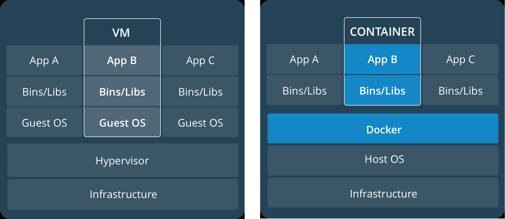
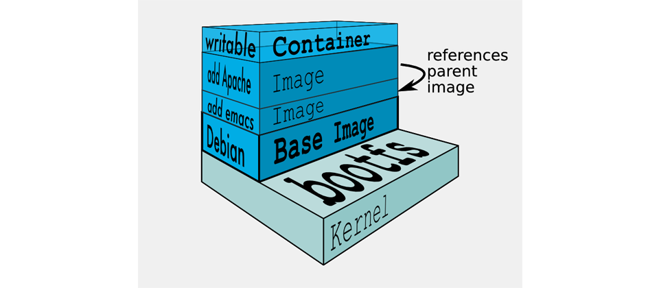

VM VS Container
- VM
- 集中管理資源(CPU, RAM, Storage)
- 獨立作業系統
- 透過Hypervisor實作快照
- Container
- Flexible(靈活): 繁雜APP建置流程集中統一
- Lightweight(輕量): 更彈性共享宿主資源
- Interchangeable(互換): 即時部屬更新版本
- Portable(可攜): 公/私Repository雲應用
- Scalable(擴展): Scale策略運用
- Stackable(堆疊): 疊加服務

Docker-Images
